Beyond the Address
Fall 2024
Editorial Design
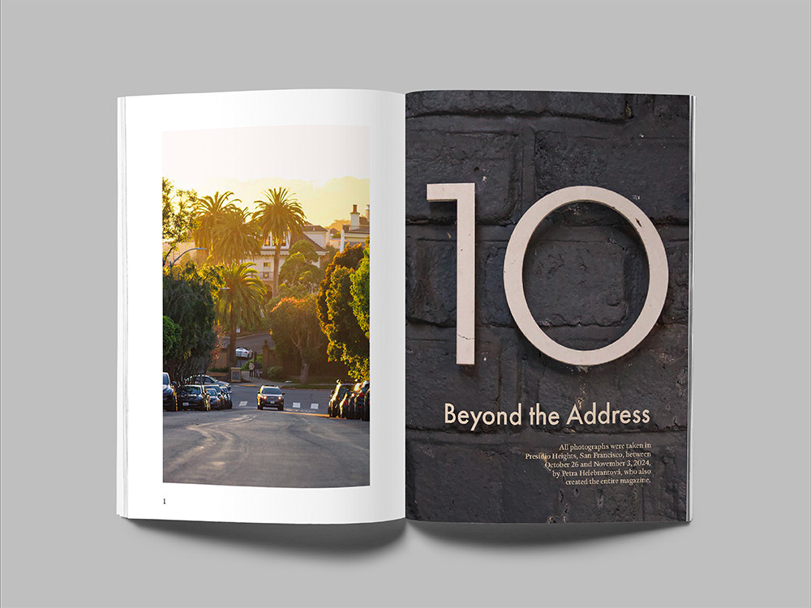
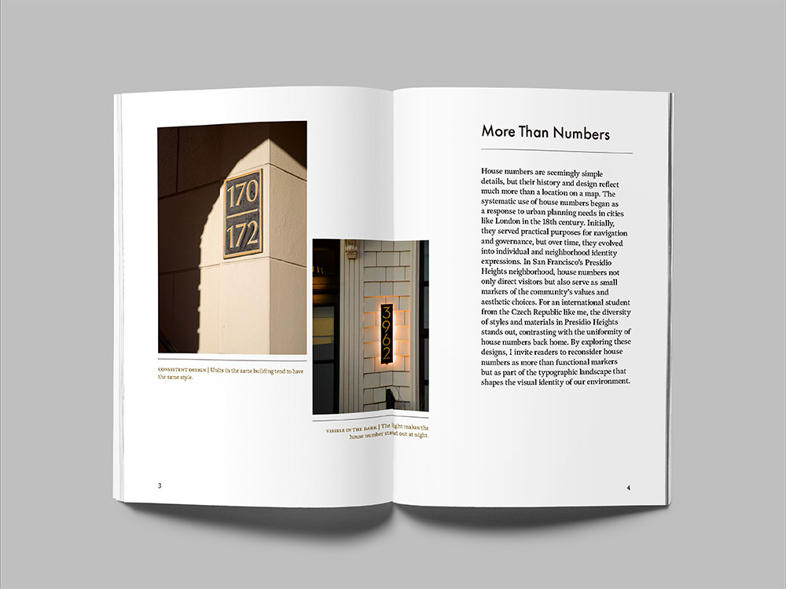
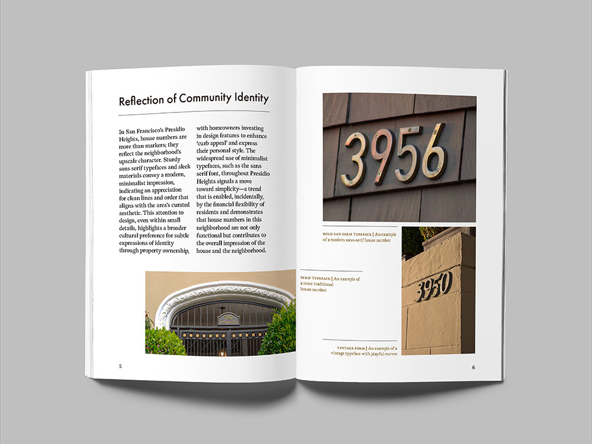
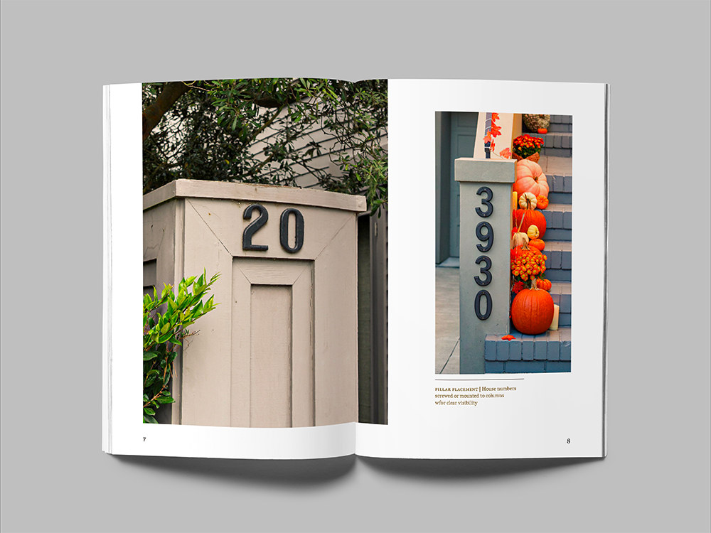
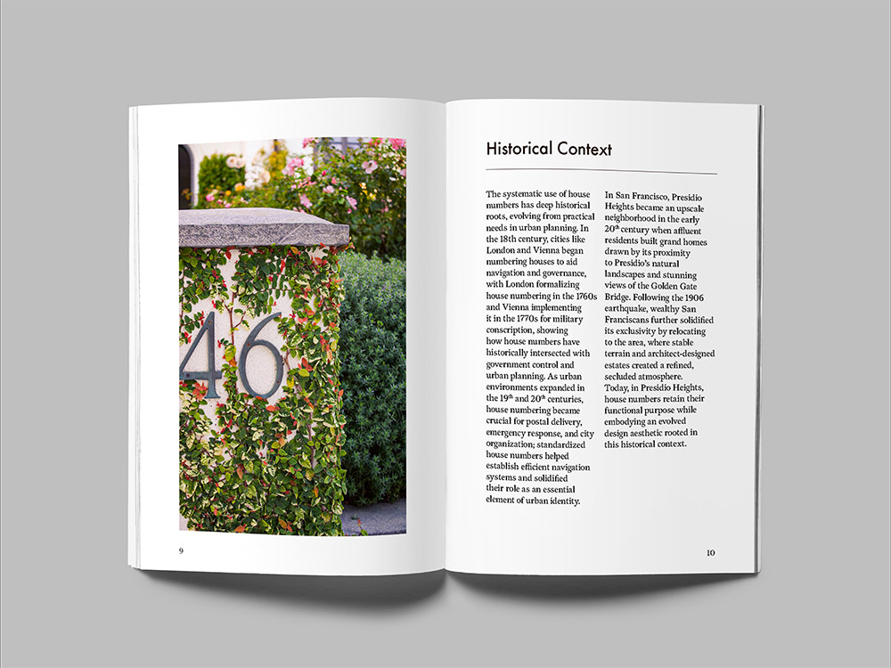
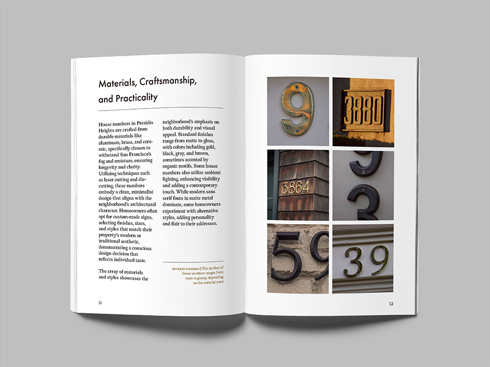
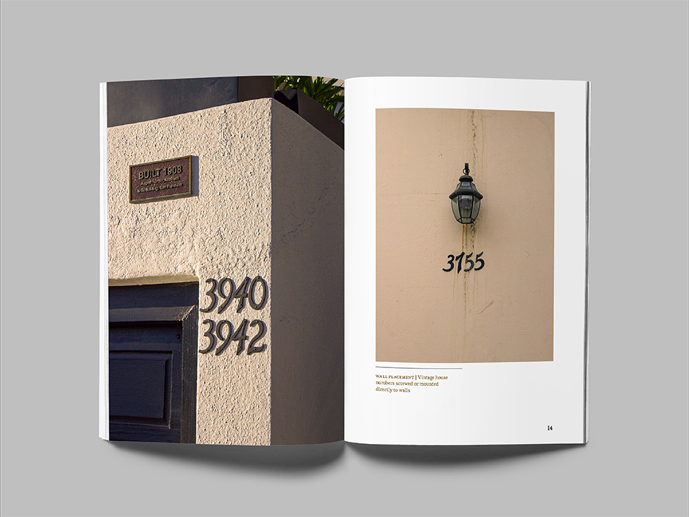
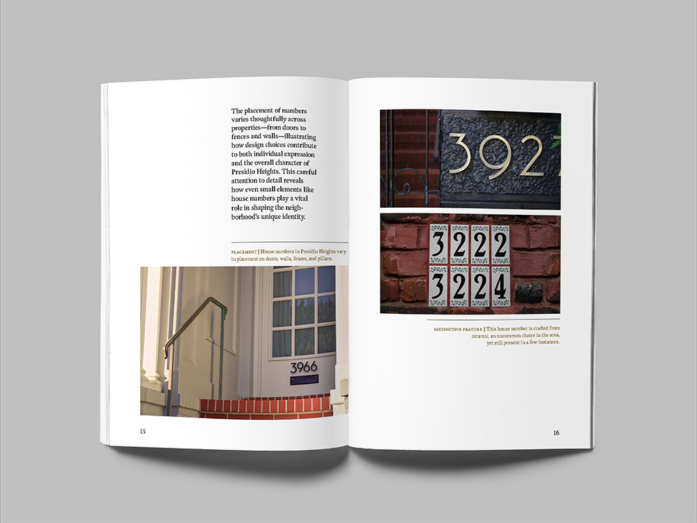
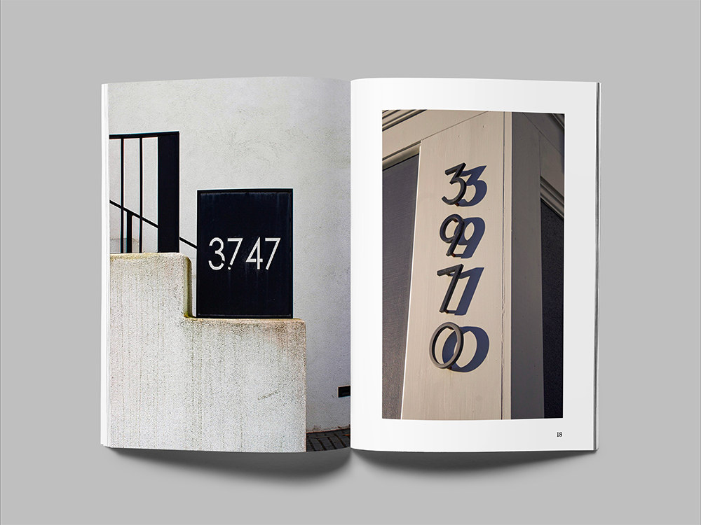
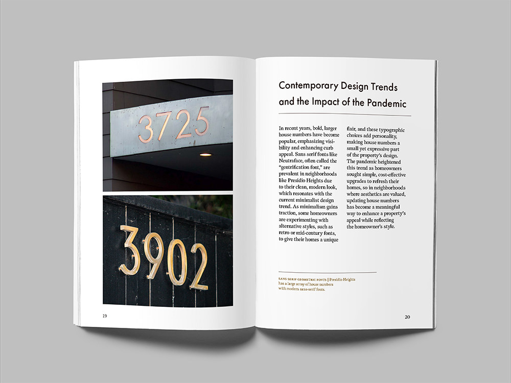
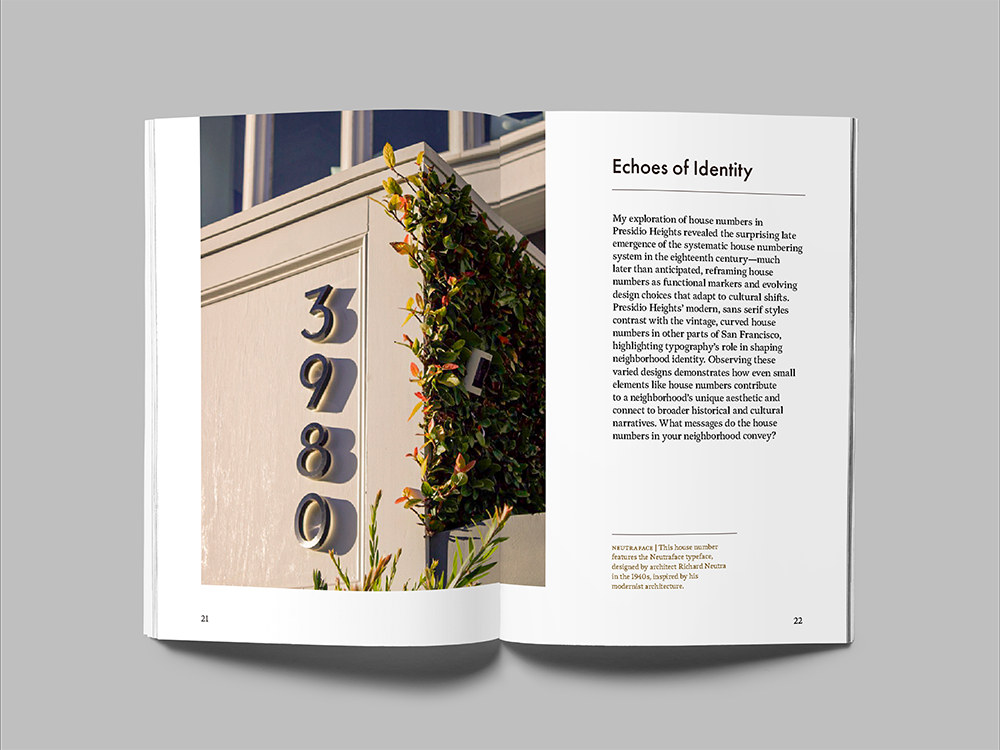
Concept
Beyond the Address is a magazine about the house numbers of Presidio Heights, San Francisco. Working from a brief on typography in the community, I walked the neighborhood photographing numbers block by block, then traced two histories against each other: how Presidio Heights was built out, and how its numbering changed as it grew. House numbers are some of the most frequently read type in any neighborhood, and the type nobody ever actually looks at.
Design Approach
The numbers here skew modern and minimal, and a great many of them are set in Neutraface, a commercial typeface widely used for house numbering. Futura was the closest match I had, so the type inside the magazine matches the type on the doors. Every photograph was taken in Presidio Heights, and the issue was set in Adobe InDesign.